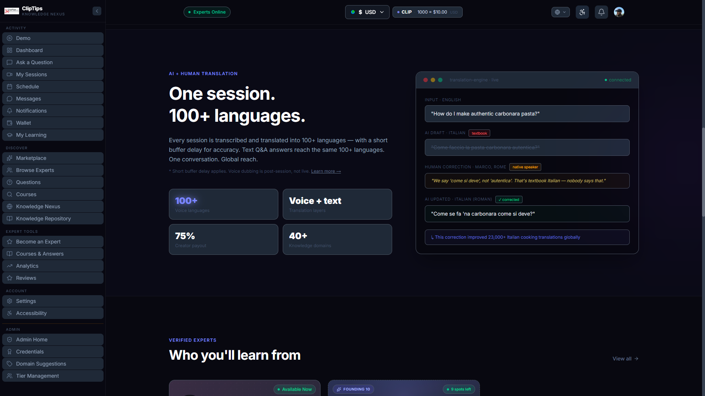
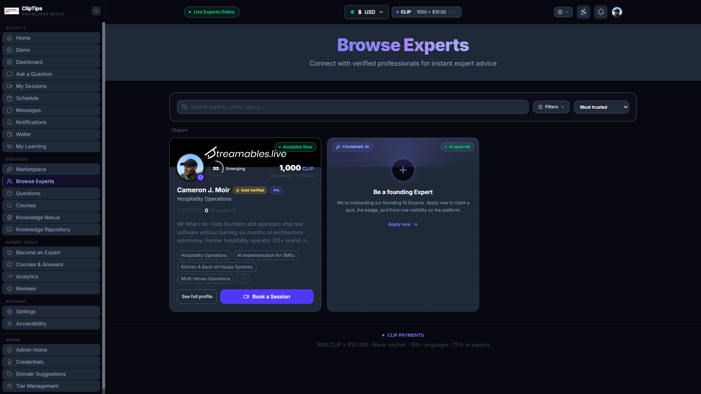
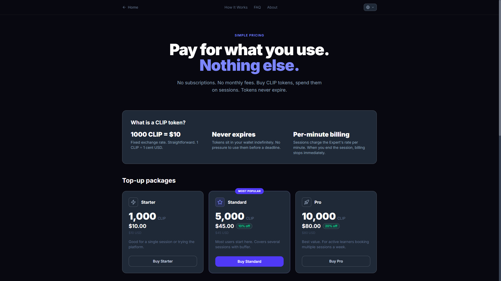
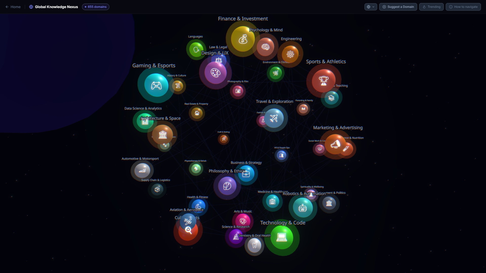

Two days ago ClipTips couldn’t do real-time cross-language conversation. Today it can.
Live Interpreter Mode is GA in production as of 2026-04-29. Speaker A talks in English. Speaker B hears A’s actual cloned voice - not a synthesised stand-in - speaking Vietnamese, or Spanish, or any of 100+ supported languages, with live captions running in parallel underneath. End-to-end latency from "speaker stops talking" to "listener hears the translation" sits at around 250-400ms. That’s "feels truly conversational" territory. Below 500ms a Zoom call doesn’t feel laggy any more.
This is a build-log post. What shipped, what cost me an hour I’d like back, what I learned about cost-modelling provider APIs, and what V1.5 looks like.

// The translation engine in motion. AI proposes the textbook draft. A native speaker (Marco from Rome) corrects it - "we say ‘come si deve’, not ‘autentica’. That’s textbook Italian, nobody says that." Every native correction compounds across the platform.
What actually shipped this week
The audio-only live interpreter pipeline went from "works in dev" to "GA in production with real Stripe payout math wired in" in a single push. Concretely:
- Phase 5f closed. Stages 6 (Stripe payout test), 7 (production flag flip via
NEXT_PUBLIC_LIVE_INTERPRETER_ENABLED=true), and 8 (admin-gating the dev demos so they’re not publicly poking holes in the pipeline) all landed. The production session route now branches onsession.live_interpreter_enabledand mounts the newLiveInterpreterRoomcomponent instead of the existing iframe path when the toggle is on. - 1.5x interpreter premium wired into booking + payout. When an asker enables interpreter on a session, they pay 1.5x the creator’s base rate. Creator still gets 75% of the base (their normal effective rate, untouched). The 50% premium goes entirely to platform to fund the per-minute Deepgram + ElevenLabs + translation API spend.
- Latency cut by 50-60%. Switched Deepgram from nova-3 to Flux (their conversational realtime model, same price, faster
is_finalemission). Switched ElevenLabs fromeleven_multilingual_v2toeleven_flash_v2_5(sub-100ms first byte instead of ~400ms). Two one-line changes; together they dropped end-to-end latency from 600-900ms to 250-400ms. - V1.5 lipsync prep shipped. Free-tier infrastructure for the next phase: face baseline capture (
FaceBaselineRecorderon /settings), per-utterance recording into a private Supabase Storage bucket (data flywheel), lipsync UI scaffolding insideLiveInterpreterRoomready to mount the synced video stream when the lipsync provider is wired up.
Twelve commits across the day. Around 1,100 lines of new code. Zero in API spend - everything that needed paid-tier services was either Sieve free credit (untouched) or built against existing keys.

// The refreshed Expert card. Banner image, Gold Verified + Pro tier badges, trust ring inline next to avatar, "Available Now" pill top-right, two CTAs (See full profile + Book a Session). Every visual element on this card was a bug filed and fixed within the same session.
The latency stack
The interpreter pipeline has five sequential stages. Any one of them slow and the whole thing feels broken. Here’s what each one does and what it cost to compress.
Stage 1: Mic to final transcript. Audio frames stream in continuously. Deepgram waits for a "silence threshold" before declaring an utterance final. The default endpointing is 300ms, which means after the speaker stops talking we wait another 300ms before deciding they’re actually done. Drop that to 150ms and you trade some false-positives on hesitations for ~150ms of latency. Switching the model from nova-3 to Flux (same $0.0077/min PAYG pricing, purpose-built for two-party realtime) buys another ~100-150ms. Best achievable: ~300-400ms.
Stage 2: Translation API. HTTP POST to OpenRouter with the source utterance, wait for the full translated string back. Streaming token responses arrive in ~150ms first-token; piping tokens straight to ElevenLabs as they arrive (instead of waiting for the full sentence) saves another ~100-200ms. Currently the production path waits for the full string. Phase B optimisation queued.
Stage 3: ElevenLabs first audio byte. The biggest single win this week. eleven_multilingual_v2 takes ~400-500ms to return the first PCM byte. eleven_flash_v2_5 takes ~75-150ms. Both support voice cloning. The trade-off is Flash has slightly less rich prosody than v2, but for live conversation where the listener cares about understanding what’s said (not exact tonal match) the trade is worth it. I exposed it as a per-request quality: ‘fast’ | ‘high’ field on the streaming-tts provider so future flows that need higher fidelity (recorded broadcasts, premium playback) can opt in to v2 explicitly.
Stage 4: Video frame buffering. V1.5 territory. To lipsync the speaker’s face to the translated audio, MuseTalk needs both the audio chunk AND a few seconds of the speaker’s face video. While translation+TTS is running, we have to buffer video frames so we have a face crop ready when audio arrives. Pre-buffered "neutral face" cache + chunked streaming inference + predictive frame extrapolation cuts this from naive ~500ms to ~200-300ms.
Stage 5: Lipsync inference + return. Send the video frames + audio to Sieve’s hosted MuseTalk endpoint, get back synced frames. ~200-500ms via Sieve hosted, ~150-200ms self-hosted on Modal A10 in same region as Daily. Self-hosting is a phase-7 cost-optimisation pass once we have real volume.
Total naive (no optimisations): ~2,600ms. Total compressed: ~1,050ms. ClipTips audio-only today sits at the compressed half of stages 1-3 (no V1.5 yet) for that ~250-400ms total.
The cost-model lock-down
I burned three iterations of margin tables before I realised I was building cost models on assumptions instead of verified numbers. Lesson written down in blood: verify provider pricing FIRST, then build the cost model. Not the other way round.
What I had to do: web-fetch Modal’s pricing page, Deepgram’s pricing page, ElevenLabs’ API pricing page, Sieve’s MuseTalk pricing post, fal.ai’s MuseTalk listing. Then run the numbers against actual session profiles instead of worst-case assumptions.
The verified numbers are cheaper than I’d been telling myself. Deepgram nova-3 is $0.0077/min (my code comment was citing the older nova-2 rate of $0.0058 - small but worth fixing for accuracy). ElevenLabs Multilingual v2 is $0.10/1k chars (was telling myself $0.22/1k from a stale rate). Sieve MuseTalk hosted is $0.14/min generated video, MIT-licensed under the hood.
Per 15-min session AI cost with full V1.5 lipsync: ~$3.46. That’s about $0.23/min. Significantly less than my earlier $0.42-0.70/min estimates. Margin at 1.5x interpreter premium holds at 78-91% for creators rated $2-$10/min, breaks even at ~$0.40/min creator base.
Practical implication: the 1.5x premium I shipped is fine. I don’t need to bump it to 1.7x like I’d almost convinced myself to do based on the inflated estimates. Sub-$0.40/min creators don’t work with V1.5 enabled, but those creators don’t exist on the platform yet anyway.

// CLIP token pricing. 1000 CLIP = $10 USD flat. Tokens never expire. Three top-up packages (Starter / Standard 10% off / Pro 20% off). Per-minute billing - when you end the session, billing stops immediately.
The mistakes
Two pieces of friction worth writing down because I’ll forget them otherwise.
Anchored on the wrong tech for too long. The original live interpreter parent plan referenced Wav2Lip (2020 model, IIIT Hyderabad, research-only license). When the conversation turned to "what about lipsync video", I parroted the parent plan’s framing and recommended forking Wav2Lip. Wrong call - I should have web-searched current state-of-the-art before quoting four-year-old planning docs. Tencent shipped MuseTalk in 2024 (MIT-licensed, 30fps real-time on V100, way better quality), and there’s no good reason to start from Wav2Lip in 2026. The lesson: tech recommendations need a current web-search, not a quote from old plan docs. State of the art in this space moves monthly.
Andrew/Brittany rename revert. Mid-session I started swapping demo voice IDs from "Harry/Sally" (custom Voice Design clones) to "Andrew/Brittany" (ElevenLabs library voices with native multilingual support). Two of the Edit calls failed silently because surrounding code had drifted and the partial state left four TypeScript errors. About thirty minutes of pure waste recovering. The lesson: when an Edit doesn’t take, stop and re-read the actual file state before firing more edits. Don’t pile changes on top of a broken intermediate state.
Both were small. Both got caught and fixed within the same session. But both are the kind of thing that snowballs if you ignore the early warning signs.
The bug-batch
Cam (the user / founder) tested the live deploy and filed five bugs in a single review pass. All five fixed and shipped within the next hour:
- Trust ring badge was rendering at
top-3 right-3on the Expert card, covering the "Available Now" pill which was at the same coords. Moved the trust ring inline next to the avatar so they sit side-by-side. - Gold Verified + Pro tier badges existed on the detail page but had never been ported to the list-view CreatorCard component. Added the same badge logic.
- The /api/creators endpoint never returned
creator.tierin the response shape - so even if the badge logic existed, it would always evaluate to false. Joinedusers.tierin the query and added it to the shaped response. - Banner image upload existed and stored, but CreatorCard never rendered it - just used the deterministic name-hashed gradient. Added
banner_urlto the header div’s background-image when uploaded, gradient remains as fallback. - The "founding 10 experts - 9 spots left" CTA was counting the platform founder himself as one of the 10 founding cohort spots. Hardcoded
taken=0until acreators.is_founding_cohortflag exists. - (Bonus, sixth fix.) Added a "See full profile" secondary CTA next to "Book a Session" so users who want to read more before committing have an explicit path - was a single primary button before.
Six commits, four files touched, ~100 lines net. Each fix shipped + deployed + re-screenshotted before moving to the next. The dev-loop with Claude Code is genuinely tight enough that this kind of "review pass + immediate fix-batch" works without ceremony.
What V1.5 lipsync looks like
The honest answer: I haven’t shipped it yet, and I won’t until there’s API budget. Sieve’s hosted MuseTalk costs $0.14/min and the free tier is $20 credit which would cover dev testing comfortably, but committing to a paid card-on-file when I’m solo and unfunded is the kind of decision that compounds badly if I get distracted for a week.
What I did instead: built every piece of V1.5 that doesn’t need the paid API. The streaming-lipsync provider abstraction (sibling pattern to streaming-tts and streaming-transcription), Sieve + fal.ai stub providers, env-based selection, POST /api/live-interpreter/lipsync server route ready to receive audio + face URL, face baseline capture flow on /settings, per-utterance recording infrastructure, lipsync video panel with three render states (waiting / streaming / unavailable), primary/inset toggle in the production session room.
When budget arrives, V1.5 is roughly half a day from shipping. The pre-built infrastructure means it’s no longer 3 weeks of work blocked behind an API key.
That trade - building the surround for $0 so the moment money is available the feature ships immediately - is exactly the shape of solo unfunded work that actually compounds. The opposite (waiting to start until you have the budget, then doing 3 weeks of work) is how products get to "almost ready" and stay there forever.

// Live Knowledge Nexus, 655 domains rendered as orbiting spheres. Click any to drop into that domain’s Expert list. Sized by activity, coloured by category. WebGL on desktop, procedural SVG fallback on mobile. The map is part of the pitch: trust isn’t built by certificates alone - it’s built by being able to see, at a glance, the breadth of what the platform knows.
The "solo and unfunded vs research labs" reality check
At one point during the build I genuinely had a "fml, am I trying to compete with Meta’s research lab on simultaneous translation?" moment. Cam’s words. The honest answer reframed the whole situation:
I’m not building research models. I’m orchestrating productized state-of-the-art into a working product. That’s a different problem than what Meta or Google research labs work on. They publish papers and drop weights. The integration into a real-time conversation marketplace with payments, identity verification, creator matchmaking, and bidirectional voice cloning is a separate engineering problem they don’t touch.
The closest commercial competitors I can think of: Google Meet’s live translation (text only, no voice cloning, no in-original-speaker-voice rendering); Zoom AI Companion (text translation, no real-time voice synthesis); HeyGen Streaming Avatars (fake avatars, not the speaker’s actual face); Synthesia and D-ID (pre-recorded only, not live conversation). None of them combine real expert face + cloned voice + real-time + paid marketplace. ClipTips would be first to market with that specific combination if V1.5 ships.
That’s a different race with a different finish line than "out-research Meta on simultaneous MT." The race is: who productizes this stack first, who gets the data flywheel turning, who builds the trust + verification layer that lets paid users transact across language boundaries without falling for fake credentials.
Solo and unfunded is genuinely a constraint. I can’t train custom models. I can’t hire ML researchers to trim the last 200ms of latency. I can’t reserve a fleet of GPUs for self-hosted MuseTalk. But the hosted APIs are doing the heavy lifting (Deepgram + ElevenLabs + Tencent collectively spent hundreds of millions on the components I string together for $0.23/min). The product moat isn’t model architecture - it’s the marketplace, the verified-identity layer, the asker/expert flywheel, and the cross-language conversation corpus that’ll accumulate from real sessions starting now.
What’s next
Three things, in order:
- Real Experts. Founding cohort of 10. The infrastructure is live and economically viable now. The platform needs people on it. Outreach starts this week.
- V1.5 lipsync ship. Gated on budget. ~Half a day of work when Sieve API budget exists. The infrastructure is already in place.
- First paid session. The end-to-end test that no amount of dev-demo testing replaces. Real asker, real expert, real CLIP balance debit, real Stripe Connect payout, real translation through the full pipeline.
ClipTips is live at cliptips-mvp.vercel.app. The full project writeup is on streamables.live/projects/cliptips.html. The previous build log (the one written before this week’s push) is at how I built ClipTips with Claude Code if you want the longer-form version of how the platform got here.